- 00 开篇词 为什么大厂面试必考操作系统？.md.html
- 00 课前必读 构建知识体系，可以这样做！.md.html
- 01 计算机是什么：“如何把程序写好”这个问题是可计算的吗？.md.html
- 02 程序的执行：相比 32 位，64 位的优势是什么？（上）.md.html
- 03 程序的执行：相比 32 位，64 位的优势是什么？（下）.md.html
- 04 构造复杂的程序：将一个递归函数转成非递归函数的通用方法.md.html
- 05 存储器分级：L1 Cache 比内存和 SSD 快多少倍？.md.html
- 05 (1) 加餐 练习题详解（一）.md.html
- 06 目录结构和文件管理指令：rm -rf 指令的作用是？.md.html
- 07 进程、重定向和管道指令：xargs 指令的作用是？.md.html
- 08 用户和权限管理指令： 请简述 Linux 权限划分的原则？.md.html
- 09 Linux 中的网络指令：如何查看一个域名有哪些 NS 记录？.md.html
- 10 软件的安装： 编译安装和包管理器安装有什么优势和劣势？.md.html
- 11 高级技巧之日志分析：利用 Linux 指令分析 Web 日志.md.html
- 12 高级技巧之集群部署：利用 Linux 指令同时在多台机器部署程序.md.html
- 12 (1)加餐 练习题详解（二）.md.html
- 13 操作系统内核：Linux 内核和 Windows 内核有什么区别？.md.html
- 14 用户态和内核态：用户态线程和内核态线程有什么区别？.md.html
- 15 中断和中断向量：Javajs 等语言为什么可以捕获到键盘输入？.md.html
- 16 WinMacUnixLinux 的区别和联系：为什么 Debian 漏洞排名第一还这么多人用？.md.html
- 16 (1)加餐 练习题详解（三）.md.html
- 17 进程和线程：进程的开销比线程大在了哪里？.md.html
- 18 锁、信号量和分布式锁：如何控制同一时间只有 2 个线程运行？.md.html
- 19 乐观锁、区块链：除了上锁还有哪些并发控制方法？.md.html
- 20 线程的调度：线程调度都有哪些方法？.md.html
- 21 哲学家就餐问题：什么情况下会触发饥饿和死锁？.md.html
- 22 进程间通信： 进程间通信都有哪些方法？.md.html
- 23 分析服务的特性：我的服务应该开多少个进程、多少个线程？.md.html
- 23 (1)加餐 练习题详解（四）.md.html
- 24 虚拟内存 ：一个程序最多能使用多少内存？.md.html
- 25 内存管理单元： 什么情况下使用大内存分页？.md.html
- 26 缓存置换算法： LRU 用什么数据结构实现更合理？.md.html
- 27 内存回收上篇：如何解决内存的循环引用问题？.md.html
- 28 内存回收下篇：三色标记-清除算法是怎么回事？.md.html
- 28 (1)加餐 练习题详解（五）.md.html
- 29 Linux 下的各个目录有什么作用？.md.html
- 30 文件系统的底层实现：FAT、NTFS 和 Ext3 有什么区别？.md.html
- 31 数据库文件系统实例：MySQL 中 B 树和 B+ 树有什么区别？.md.html
- 32 HDFS 介绍：分布式文件系统是怎么回事？.md.html
- 32 (1)加餐 练习题详解（六）.md.html
- 33 互联网协议群（TCPIP）：多路复用是怎么回事？.md.html
- 34 UDP 协议：UDP 和 TCP 相比快在哪里？.md.html
- 35 Linux 的 IO 模式：selectpollepoll 有什么区别？.md.html
- 36 公私钥体系和网络安全：什么是中间人攻击？.md.html
- 36 (1)加餐 练习题详解（七）.md.html
- 37 虚拟化技术介绍：VMware 和 Docker 的区别？.md.html
- 38 容器编排技术：如何利用 K8s 和 Docker Swarm 管理微服务？.md.html
- 39 Linux 架构优秀在哪里.md.html
- 40 商业操作系统：电商操作系统是不是一个噱头？.md.html
- 40 (1)加餐 练习题详解（八）.md.html
- 41 结束语 论程序员的发展——信仰、选择和博弈.md.html
- 捐赠
12 高级技巧之集群部署：利用 Linux 指令同时在多台机器部署程序
Linux 指令是由很多顶级程序员共同设计的，使用 Linux 指令解决问题的过程，就好像在体验一款优秀的产品。每次通过查资料使用 Linux 指令解决问题后，都会让我感到收获满满。在这个过程中，我不仅学会了一条指令，还从中体会到了软件设计的魅力：彼此独立，又互成一体。这就像每个 Linux 指令一样，专注、高效。回想起来，在我第一次看到管道、第一次使用 awk、第一次使用 sort，都曾有过这种感受。
通过前面的学习，相信你已经掌握了一些基础指令的使用方法，今天我们继续挑战一个更复杂的问题——用 Linux 指令管理一个集群。这属于 Linux 指令的高级技巧，所谓高级技巧并不是我们要学习更多的指令，而是要把之前所学的指令进行排列组合。当你从最初只能写几条指令、执行然后看结果，成长到具备书写一个拥有几十行、甚至上百行的 bash 脚本的能力时，就意味着你具备了解决复杂问题的能力。而最终的目标，是提升你对指令的熟练程度，锻炼工程能力。
本课时，我将带你朝着这个目标努力，通过把简单的指令组合起来，分层组织成最终的多个脚本文件，解决一个复杂的工程问题：在成百上千的集群中安装一个 Java 环境。接下来，请你带着这个目标，开启今天的学习。
第一步：搭建学习用的集群
第一步我们先搭建一个学习用的集群。这里简化一下模型。我在自己的电脑上装一个ubuntu桌面版的虚拟机，然后再装两个ubuntu服务器版的虚拟机。
相对于桌面版，服务器版对资源的消耗会少很多。我将教学材料中桌面版的ubuntu命名为u1，两个用来被管理的服务器版ubuntu叫作v1和v2。
用桌面版的原因是：我喜欢ubuntu漂亮的开源字体，这样会让我在给你准备素材的时候拥有一个好心情。如果你对此感兴趣，可以搜索ubuntu mono，尝试把这个字体安装到自己的文本编辑器中。不过我还是觉得在ubuntu中敲代码更有感觉。
注意，我在这里只用了 3 台服务器，但是接下来我们要写的脚本是可以在很多台服务器之间复用的。
第二步：循环遍历 IP 列表
你可以想象一个局域网中有很多服务器需要管理，它们彼此之间网络互通，我们通过一台主服务器对它们进行操作，即通过u1操作v1和v2。
在主服务器上我们维护一个ip地址的列表，保存成一个文件，如下图所示：
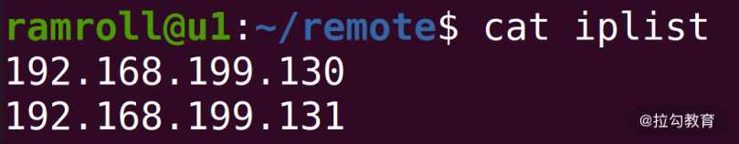
目前iplist中只有两项，但是如果我们有足够的机器，可以在里面放成百上千项。接下来，请你思考shell如何遍历这些ip？
你可以先尝试实现一个最简单的程序，从文件iplist中读出这些ip并尝试用for循环遍历这些ip，具体程序如下：
#!/usr/bin/bash
readarray -t ips < iplist
for ip in ${ips[@]}
do
echo $ip
done
首行的#!叫作 Shebang。Linux 的程序加载器会分析 Shebang 的内容，决定执行脚本的程序。这里我们希望用bash来执行这段程序，因为我们用到的 readarray 指令是bash 4.0后才增加的能力。
readarray指令将 iplist 文件中的每一行读取到变量ips中。ips是一个数组，可以用echo ${ips[@]}打印其中全部的内容：@代表取数组中的全部内容；$符号是一个求值符号。不带$的话，ips[@]会被认为是一个字符串，而不是表达式。
for循环遍历数组中的每个ip地址，echo把地址打印到屏幕上。
如果用shell执行上面的程序会报错，因为readarray是bash 4.0后支持的能力，因此我们用chomd为foreach.sh增加执行权限，然后直接利用shebang的能力用bash执行，如下图所示：
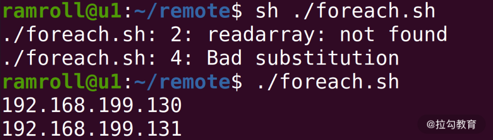
第三步：创建集群管理账户
为了方便集群管理，通常使用统一的用户名管理集群。这个账号在所有的集群中都需要保持命名一致。比如这个集群账号的名字就叫作lagou。
接下来我们探索一下如何创建这个账户lagou，如下图所示：
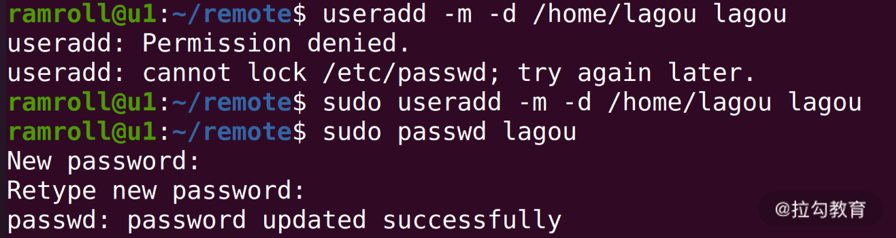
上面我们创建了lagou账号，然后把lagou加入sudo分组。这样lagou就有了sudo成为root的能力，如下图所示：
接下来，我们设置lagou用户的初始化shell是bash，如下图所示：
这个时候如果使用命令su lagou，可以切换到lagou账号，但是你会发现命令行没有了颜色。因此我们可以将原来用户下面的.bashrc文件拷贝到/home/lagou目录下，如下图所示：
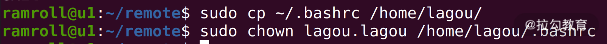
这样，我们就把一些自己平时用的设置拷贝了过去，包括终端颜色的设置。.bashrc是启动bash的时候会默认执行的一个脚本文件。
接下来，我们编辑一下/etc/sudoers文件，增加一行lagou ALL=(ALL) NOPASSWD:ALL表示lagou账号 sudo 时可以免去密码输入环节，如下图所示：
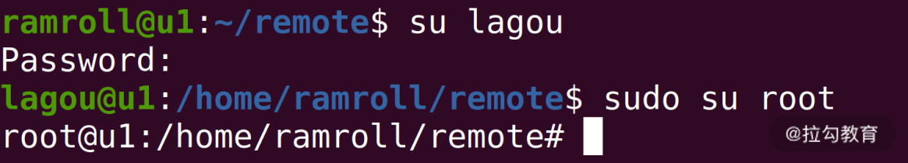
我们可以把上面的完整过程整理成指令文件，create_lagou.sh：
sudo useradd -m -d /home/lagou lagou
sudo passwd lagou
sudo usermod -G sudo lagou
sudo usermod --shell /bin/bash lagou
sudo cp ~/.bashrc /home/lagou/
sudo chown lagou.lagou /home/lagou/.bashrc
sduo sh -c 'echo "lagou ALL=(ALL) NOPASSWD:ALL">>/etc/sudoers'
你可以删除用户lagou，并清理/etc/sudoers文件最后一行。用指令userdel lagou删除账户，然后执行create_lagou.sh重新创建回lagou账户。如果发现结果一致，就代表create_lagou.sh功能没有问题。
最后我们想在v1v2上都执行create_logou.sh这个脚本。但是你不要忘记，我们的目标是让程序在成百上千台机器上传播，因此还需要一个脚本将create_lagou.sh拷贝到需要执行的机器上去。
这里，可以对foreach.sh稍做修改，然后分发create_lagou.sh文件。
foreach.sh
#!/usr/bin/bash
readarray -t ips < iplist
for ip in ${ips[@]}
do
scp ~/remote/create_lagou.sh ramroll@$ip:~/create_lagou.sh
done
这里，我们在循环中用scp进行文件拷贝，然后分别去每台机器上执行create_lagou.sh。
如果你的机器非常多，上述过程会变得非常烦琐。你可以先带着这个问题学习下面的Step 4，然后再返回来重新思考这个问题，当然你也可以远程执行脚本。另外，还有一个叫作sshpass的工具，可以帮你把密码传递给要远程执行的指令，如果你对这块内容感兴趣，可以自己研究下这个工具。
第四步： 打通集群权限
接下来我们需要打通从主服务器到v1和v2的权限。当然也可以每次都用ssh输入用户名密码的方式登录，但这并不是长久之计。 如果我们有成百上千台服务器，输入用户名密码就成为一件繁重的工作。
这时候，你可以考虑利用主服务器的公钥在各个服务器间登录，避免输入密码。接下来我们聊聊具体的操作步骤：
首先，需要在u1上用ssh-keygen生成一个公私钥对，然后把公钥写入需要管理的每一台机器的authorized_keys文件中。如下图所示：我们使用ssh-keygen在主服务器u1中生成公私钥对。
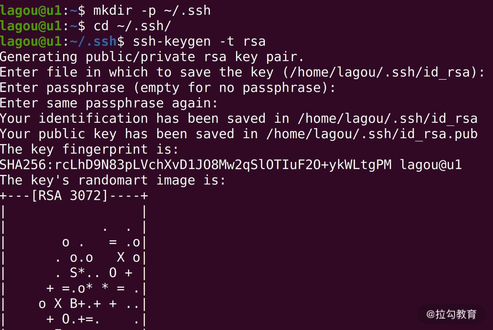
然后使用mkdir -p创建~/.ssh目录，-p的优势是当目录不存在时，才需要创建，且不会报错。~代表当前家目录。 如果文件和目录名前面带有一个.，就代表该文件或目录是一个需要隐藏的文件。平时用ls的时候，并不会查看到该文件，通常这种文件拥有特别的含义，比如~/.ssh目录下是对ssh的配置。
我们用cd切换到.ssh目录，然后执行ssh-keygen。这样会在~/.ssh目录中生成两个文件，id_rsa.pub公钥文件和is_rsa私钥文件。 如下图所示：
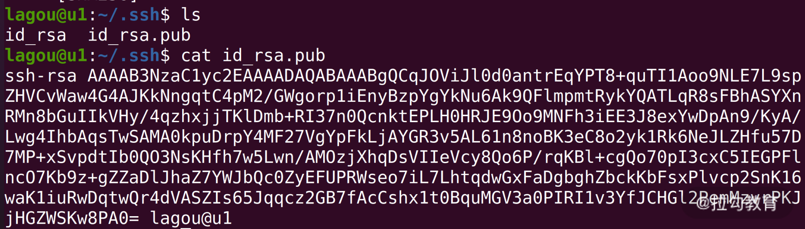
可以看到id_rsa.pub文件中是加密的字符串，我们可以把这些字符串拷贝到其他机器对应用户的~/.ssh/authorized_keys文件中，当ssh登录其他机器的时候，就不用重新输入密码了。 这个传播公钥的能力，可以用一个shell脚本执行，这里我用transfer_key.sh实现。
我们修改一下foreach.sh，并写一个transfer_key.sh配合foreach.sh的工作。transfer_key.sh内容如下：
foreach.sh
#!/usr/bin/bash
readarray -t ips < iplist
for ip in ${ips[@]}
do
sh ./transfer_key.sh $ip
done
tranfer_key.sh
ip=$1
pubkey=$(cat ~/.ssh/id_rsa.pub)
echo "execute on .. $ip"
ssh lagou@$ip "
mkdir -p ~/.ssh
echo $pubkey >> ~/.ssh/authorized_keys
chmod 700 ~/.ssh
chmod 600 ~/.ssh/authorized_keys
"
在foreach.sh中我们执行 transfer_key.sh，并且将 IP 地址通过参数传递过去。在 transfer_key.sh 中，用$1读出 IP 地址参数， 再将公钥写入变量pubkey，然后登录到对应的服务器，执行多行指令。用mkdir指令检查.ssh目录，如不存在就创建这个目录。最后我们将公钥追加写入目标机器的~/.ssh/authorized_keys中。
chmod 700和chmod 600是因为某些特定的linux版本需要.ssh的目录为可读写执行，authorized_keys文件的权限为只可读写。而为了保证安全性，组用户、所有用户都不可以访问这个文件。
此前，我们执行foreach.sh需要输入两次密码。完成上述操作后，我们再登录这两台服务器就不需要输入密码了。
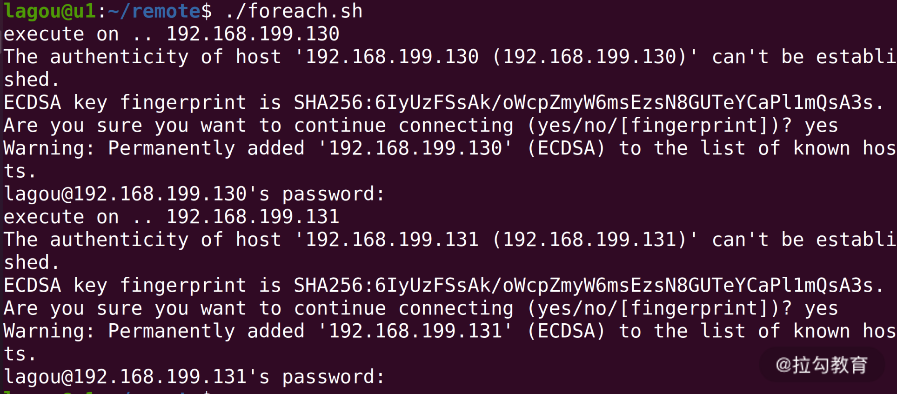
接下来，我们尝试一下免密登录，如下图所示：
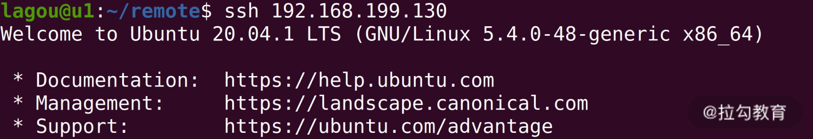
可以发现，我们登录任何一台机器，都不再需要输入用户名和密码了。
第五步：单机安装 Java 环境
在远程部署 Java 环境之前，我们先单机完成以下 Java 环境的安装，用来收集需要执行的脚本。
在ubuntu上安装java环境可以直接用apt。
我们通过下面几个步骤脚本配置 Java 环境：
sudo apt install openjdk-11-jdk
经过一番等待我们已经安装好了java，然后执行下面的脚本确认java安装。
which java
java --version
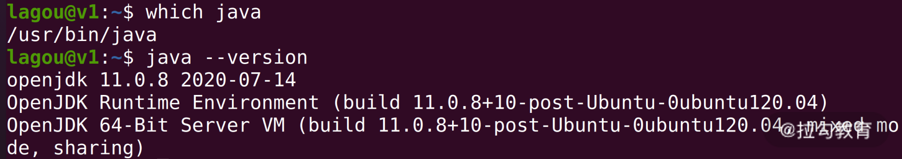
根据最小权限原则，执行 Java 程序我们考虑再创建一个用户ujava。
sudo useradd -m -d /opt/ujava ujava
sudo usermod --shell /bin/bash lagou
这个用户可以不设置密码，因为我们不会真的登录到这个用户下去做任何事情。接下来我们为用户配置 Java 环境变量，如下图所示：
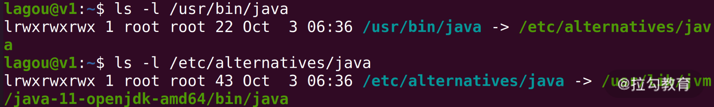
通过两次 ls 追查，可以发现java可执行文件软连接到/etc/alternatives/java然后再次软连接到/usr/lib/jvm/java-11-openjdk-amd64下。
这样我们就可以通过下面的语句设置 JAVA_HOME 环境变量了。
export JAVA_HOME=/usr/lib/jvm/java-11-openjdk-amd64/
Linux 的环境变量就好比全局可见的数据，这里我们使用 export 设置JAVA_HOME环境变量的指向。如果你想看所有的环境变量的指向，可以使用env指令。
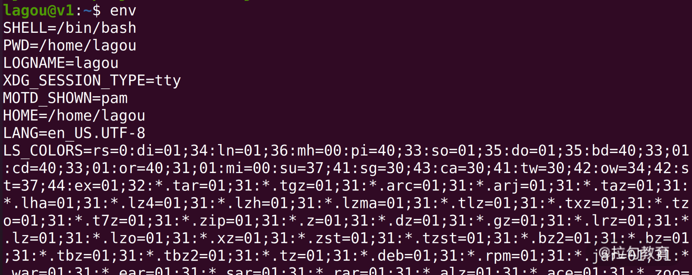
其中有一个环境变量比较重要，就是PATH。
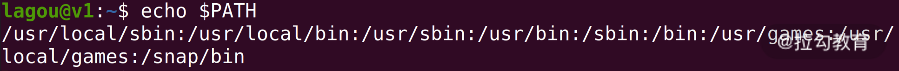
如上图，我们可以使用shell查看PATH的值，PATH中用:分割，每一个目录都是linux查找执行文件的目录。当用户在命令行输入一个命令，Linux 就会在PATH中寻找对应的执行文件。
当然我们不希望JAVA_HOME配置后重启一次电脑就消失，因此可以把这个环境变量加入ujava用户的profile中。这样只要发生用户登录，就有这个环境变量。
sudo sh -c 'echo "export JAVA_HOME=/usr/lib/jvm/java-11-openjdk-amd64/" >> /opt/ujava/.bash_profile'
将JAVA_HOME加入bash_profile，这样后续远程执行java指令时就可以使用JAVA_HOME环境变量了。
最后，我们将上面所有的指令整理起来，形成一个install_java.sh。
sudo apt -y install openjdk-11-jdk
sudo useradd -m -d /opt/ujava ujava
sudo usermod --shell /bin/bash ujava
sudo sh -c 'echo "export JAVA_HOME=/usr/lib/jvm/java-11-openjdk-amd64/" >> /opt/ujava/.bash_profile'
apt后面增了一个-y是为了让执行过程不弹出确认提示。
第六步：远程安装 Java 环境
终于到了远程安装 Java 环境这一步，我们又需要用到foreach.sh。为了避免每次修改，你可以考虑允许foreach.sh带一个文件参数，指定需要远程执行的脚本。
foreach.sh
#!/usr/bin/bash
readarray -t ips < iplist
script=$1
for ip in ${ips[@]}
do
ssh $ip 'bash -s' < $script
done
改写后的foreach会读取第一个执行参数作为远程执行的脚本文件。 而bash -s会提示使用标准输入流作为命令的输入；< $script负责将脚本文件内容重定向到远程bash的标准输入流。
然后我们执行foreach.sh install_java.sh，机器等待 1 分钟左右，在执行结束后，可以用下面这个脚本检测两个机器中的安装情况。
check.sh
sudo -u ujava -i /bin/bash -c 'echo $JAVA_HOME'
sudo -u ujava -i java --version
check.sh中我们切换到ujava用户去检查JAVA_HOME环境变量和 Java 版本。执行的结果如下图所示：
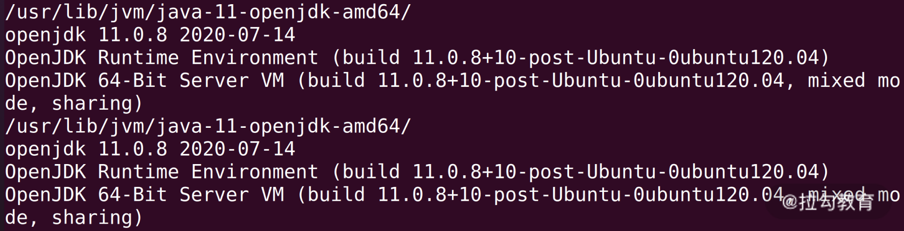
总结
这节课我们所讲的场景是自动化运维的一些皮毛。通过这样的场景练习，我们复习了很多之前学过的 Linux 指令。在尝试用脚本文件构建一个又一个小工具的过程中，可以发现复用很重要。
在工作中，优秀的工程师，总是善于积累和复用，而shell脚本就是积累和复用的利器。如果你第一次安装java环境，可以把今天的安装脚本保存在自己的笔记本中，下次再安装就能自动化完成了。除了积累和总结，另一个非常重要的就是你要尝试自己去查资料，包括使用man工具熟悉各种指令的使用方法，用搜索引擎查阅资料等。
© 2019 - 2023 Liangliang Lee. Powered by gin and hexo-theme-book.